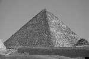

Antik Mısır firavunu Khufu (MÖ 2609-2566) mezarının, kendi büyüklüğünü yansıtan devasa bir anıt olmasını istiyordu. Çöldeki büyük piramit sadece ölüm sonrası yolculuğu sırasında ruhunun korunmasını sağlamayacak, aynı zamanda insanlığın yirmi üç yıllık hükümranlığını hiç unutmamasını da mümkün kılacaktı.

Gerçekten de öyle oldu. Khufu’nun ismi daima Giza’nın Büyük Piramit’i ile birlikte anıldı. Piramidin inşası için büyük bir işçi ordusunun neredeyse firavunun ömrü boyunca çalışması gerekmişti. Antik dünyanın yedi harikasından biri olan piramit, inşası bittiği zaman dünyanın insan elinden çıkmış en yüksek yapısıydı –ve sonraki 3000 yıl boyunca da öyle kalacaktı.
Piramitlere olan tutkusu dışında Khufu hakkında pek az şey bilinmektedir. Kral Sinefru’nun oğlu ve Antik Mısır’ın dördüncü hanedanının ikinci üyesiydi. Sinefru’nun ölümünün ardından henüz yirmili yaşlarındayken firavun oldu. Nübya,[1] Güney Mısır ve batıda da Libya’ya olmak üzere çeşitli seferler düzenlediği tahmin edilmektedir.
Antik Mısırlıların ölümden sonraki hayata ilişkin inançlarının piramitlerin inşası üzerinde önemli bir etkisi olduğuna inanılmaktadır. Antik Mısırlılar firavunların yaşayan tanrılar olduğuna inanıyordu. Firavunların öldükten sonra cennete gidebilmesi ise ancak piramitler sayesinde mümkün oluyordu.
Khufu’nun büyük piramidi, Giza’da inşa edilmiş ilk ve en büyük yapıdır. Firavun ayrıca eşleri ve akrabaları için daha küçük başka anıtlar da inşa ettirmişti. Benzer bir şekilde Khufu’nun kendisinden sonra gelen iki halefi de bu bölgede kendi piramitlerini inşa ettirmiştir. Piramitlerin inşasında kullanılan kireç taşlarının önemli bir bölümü çevre bölgelerden çıkarılmış ve Nil Nehri üzerinde sallarla taşınmıştır. Daha sonra üç tonluk bloklar halinde inşaat alanına kadar devasa bir rampanın üzerinde sürüklenmişlerdir. Piramit yapımında kullanılan diğer malzemeler ise Lübnan gibi uzak bölgelerden getirilmiştir.
Ellili yaşlardaki ölümünün ardından Khufu mumyalandı ve piramidin içindeki derin bir mezara gömüldü. Her ne kadar piramidin taştan olan dış yüzeyi ve dış kısımları bin yıl içerisinde yağmalanmış olsa da, Büyük Piramit firavunun da istediği gibi büyük ölçüde hasar görmeden günümüze kadar ayakta kalabilmiştir.
Ek Bilgiler
1- Büyük Piramit’in inşasında yaklaşık 2.3 milyon kireçtaşı kullanılmıştır. Bazılarının ağırlığı on beş tona kadar ulaşabilmektedir. Piramidin toplamda 6 milyon ton ağırlığında olduğu tahmin edilmektedir.
2- Khufu’nun tam adı “Khnum, beni koru” anlamına gelen “Khnum-Khufwy”dur. Khnum Antik Mısır’ın Nil tanrısıydı. Nil Nehri, Antik Mısır tarımı ve ticareti için hayati önem taşıyordu.
3- Büyük Sfenks, Büyük Piramit’in yanı başında durmaktadır. Aslan-insan karışımı bir yaratığı temsil eden heykelin, Khufu’nun oğlu olan Firavun Kefren (MÖ 2558-2532) tarafından inşa ettirildiği düşünülmektedir.